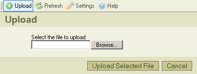

Lataa palvelimelle -nappi* ty枚kalurivill盲 avaa "Lataa palvelimelle" -ruudun, jonka avulla lis盲t盲盲n uusia tiedostoja valittuun kansioon. T盲ss盲 kuvaruutukaappaus:

Napsauta "Peru"-nappia sulkeaksesi ruudun, tai napsauta uudelleen "Lataa palvelimelle"-nappia ty枚kalurivill盲.
* "Lataa palvelimelle" -termi tarkoittaa tiedoston siirt盲mist盲 paikalliselta tietokoneelta palvelimelle.
Voit n盲hd盲 seuraavia viestej盲 lataustapahtuman aikana:
Viesti tarkoittaa, ett盲 samanniminen kuin lataamasi tiedosto on jo tallennettu hakemistoon. Ristiriidan est盲miseksi tiedostonimen per盲盲n lis盲t盲盲n juokseva numero "(1)".
Palvelin ei hyv盲ksy ladattavaa tiedostoa. Yleens盲 kysymys on siit盲, ett盲 CKFinder on asetettu est盲m盲盲n tiettyjen tiedostotyyppien lataaminen. Ne tunnistetaan tiedostotarkenteen perusteella. Lataaminen estet盲盲n tietoturvasyist盲. Vaihtoehtoisesti tiedostokoko voi olla liian suuri. Siin盲 tapauksessa palvelin on konfiguroitava hyv盲ksym盲盲n isompia tiedostoja.
Ladattava tiedosto sis盲lt盲盲 HTML-koodia. Tietoturvasyist盲 vain m盲盲r盲tyill盲 tiedostotarkenteilla varustetut tiedostot saavat sis盲lt盲盲 HTML-koodia. Ota yhteytt盲 p盲盲k盲ytt盲j盲盲n selvitt盲盲ksesi, mitk盲 ovat hyv盲ksytt盲j盲 tiedostotyyppej盲, ja mik盲 on niiden suurin sallittu koko.